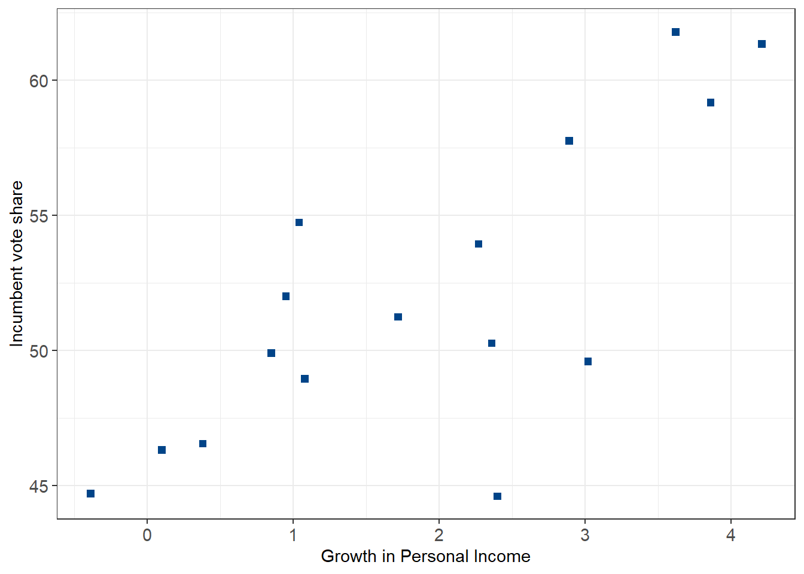
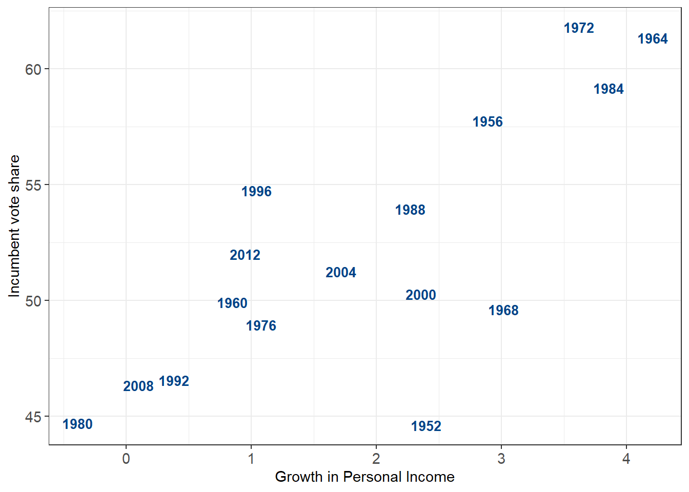
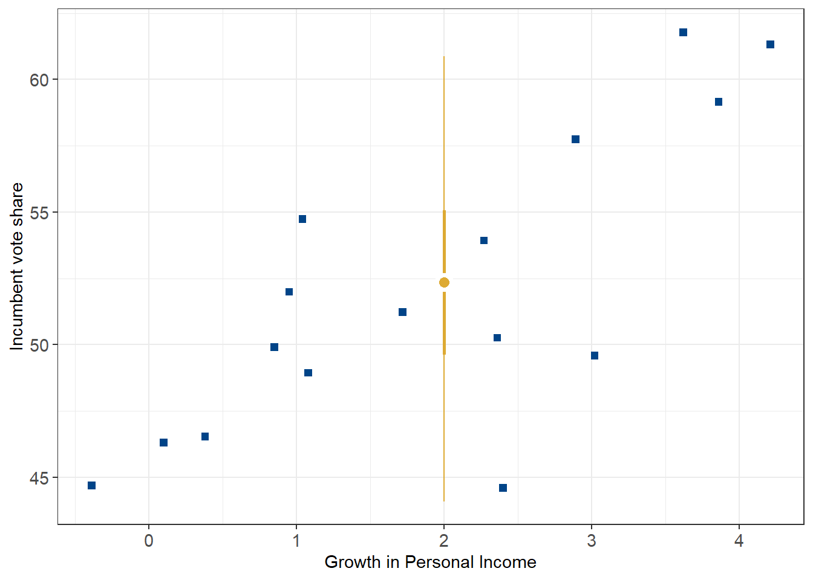

The data below is part of Douglas Hibb’s “Bread and Peace” model of U.S. elections. The data below show the proportion of the 2-party vote share for the incumbent party against a measure of personal income growth during that party’s tenure. As seen in the plot, there appears to be a fairly strong relationship between the economic status under the incumbent party and their share of the 2 party vote.
plot1.1<-ggplot(election) +geom_point(aes(x = growth, y = vote), size =2, shape =22, fill ='#004488', color ='#004488') +labs(x ="Growth in Personal Income", y ="Incumbent vote share") +theme_bw() +theme(axis.text =element_text(size =11))plot1.1

Growth in personal income is associated with higher vote shares for the incumbent party
Code
plot1.2<-ggplot(election) +geom_text(aes(x = growth, y = vote, label = year), size =3.5, fontface ='bold', color ='#004488') +labs(x ="Growth in Personal Income", y ="Incumbent vote share") +theme_bw() +theme(axis.text =element_text(size =11))plot1.2

The 1980 election saw Jimmy Carter lose decsively to Ronald Regan amid a floundering economy.
Therefore, we have the simple regression equation:
\[y = \beta_0 + \beta_{1}income + \epsilon\]
Where the expected two party vote share \(y\) is assumed to be a function of the growth in personal income growth \(\beta_1\) plus unmeasured residual error \(\epsilon\). So far this isn’t any different than your bog-standard lm(y~x) type model. The difference is how a Bayesian model handles the model parameters. In short, while a frequentist model views parameters as “fixed”, a Bayesian model views them as random variables modeled as draws from a posterior distribution. This posterior distribution is formed from a likelihood (the observed data), and a prior distribution.
Because this isn’t meant to be a full introduction to Bayesian inference, feel free to review some good articles here, or here.
The Bayesian approach
Code
# let's regress!fit2_prior <-c(prior(normal(5, 2), class ='b'))# model 1 has default (flat) priors on betas# 1 percentage point in growth is associated with ~ 3% increase in vote sharefit1 <-brm(vote ~ growth,data = election,family ="gaussian",file ="hibbs_fit1.Rdata")tidy(fit1)
# same model, with much tighter priors# assuming a mean effect of about 2.5% +- 1.5%fit2 <-brm( vote ~ growth,data = election,family ="gaussian",prior = fit2_prior,file ="hibbs_fit2.Rdata" )tidy(fit2)
We can create a prediction for y given a new value of x. For example, what would the expected vote share be, given the growth in personal income was 2%? Here we can access the posterior distribution for a prediction of y
Code
# what is the predicted vote share given a 2% growth rate?# 52%, but with a pretty big margin of errornewgrowth =2.0newprobs =c(.025, .25, .75, 0.975)pred1 <-posterior_predict(fit1, newdata =data.frame(growth=newgrowth))ypred =mean(pred1)ypred_quantile =quantile(pred1, newprobs)
This prediction itself is constructed as a distribution from the posterior, which gives us a range of values for the prediction. Below we see the mean prediction for incumbent vote share where \(y=2\) is 52.3, but this could plausibly range between as low as 44 or as high as 61.
Code
ggplot(data.frame(x = pred1)) +geom_density(aes(x = x), linewidth =1, color ='#DDAA33', fill ='#DDAA33', alpha = .2) +labs(x ="Predicted Vote Share (y=2)", y ="Probability Density") +theme_bw() +theme(axis.text =element_text(size =11))

Code
# plot the 50% and 95% credible intervals for the point estimate of 2% growthplot1.1+annotate(geom ="linerange", x = newgrowth, ymin = ypred_quantile[2], ymax = ypred_quantile[3], color ='#DDAA33', linewidth =1) +annotate(geom ="linerange", x = newgrowth, ymin = ypred_quantile[1], ymax = ypred_quantile[4], color ='#DDAA33') +annotate(geom ="point", x = newgrowth, y = ypred, fill ='#DDAA33', color ='white', stroke =2, size =3, shape =21)
We can also access simulations for the intercepts and slopes of each model.